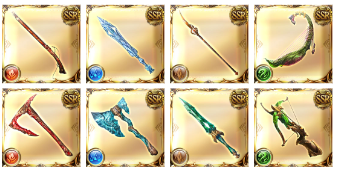

活動概要
活動概要
GBF每個月的活動量算是較其他手遊大的，在此會提出幾個重要活動做說明。
活動在GBF中是最重要的核心內容，活動也是獲取免費石頭的重要方法。
平均一個月約有4次左右的活動量。
月末活動
月末活動主要是新劇情，獎勵方式以戰貨形式為主。
戰貨的內容前4箱建議全部抽完才重置，5~10箱可以獲得過去活動沒有拿到的骸晶，11~20箱每箱都有100寶晶石。
除了前4箱非常推薦要抽完外，其他的部分就請騎空士考量自己的肝度，較有效率的刷戰貨方式為周回Hard獲取Extreme的門票，再周回Extreme獲取戰貨。通關難度後會隨機出現Hell難度，達成三次條件後，以後的Hell難度可直接跳過獲得獎勵。
除此之外，還會有每日任務，務必要記得解完。
月中活動
月中活動是復刻以前的活動，獎勵方式主要是兌換道具的形式。
這個活動就是單純的刷關卡獲取兌換道具的資源而已，單純的打單人Extreme以及Maniac難度即可。通關難度後會隨機出現Hell難度(Maniac必出)，達成三次條件後，以後的Hell難度可直接跳過獲得獎勵。
除此之外，還會有每日任務，務必要記得解完。
交換優先度
1.轉世點數
由於轉世票的原因，能獲得的轉世點有限，通過這個活動可加快製作賢者或轉世召的速度。
2.十連券/單抽券、骸晶
前者可以累積你存井的速度，骸晶則是入手管道有限，並且製作一些重要東西時會需要的資源(合成黑鋼也是一種考量)。
3.LB戒指
戒指的入手方法也不多，大致上都是從活動累積起來
4.水/粉、玉鋼
日常消耗品
連戰隊
很久才會復刻一次的活動(1~2次/年)。
類似闖關玩法的活，必須先行編成連戰專用隊伍，依照難度會有2~3個關卡，且連續兩個關卡除主角外不得重複使用相同角色。
算是GBF中比較彿心來的，打完每一種難度拿石後，打Extreme難度湊貢獻點以及討伐章拿完獎勵即可。
六道擊滅戰
每幾個月都會以屬性輪替的方式復刻的活動，主要是以討伐戰形式進行，很類似月中復刻活動，只是目的不同。
目的主要是通過討伐Boss獲取兌換、製作六道武器的素材，由於真化素材只有在該活動開放時才能獲取，切記先以製作六道武器為主，不要先兌換其餘的東西。
活動的Maniac及Hell難度都有機會掉落緋緋金(都市傳說級別機率)，記得每天打兩次XD

四象降臨
平均每年復刻4次左右的活動，玩法其實很簡單，就是分別打5種屬性的boss取得討伐章及點數兌換獎勵的活動，也有每日任務可拿石。
只是這活動算是比前幾個都還要農很多的活動，要換的點數實在太多了
交換優先度
1.方陣的四象武器
第一次遇上活動的角度來看，首要兌換的東西。
2.印符
印符主要作為開啟黃龍、黑麒麟關卡的門票以及四象武器突破的道具，非常重要。
3.天人製作素材
全部兌換完畢是可以做一個天人的量，非常的實惠。
4.15個緋緋金碎片
每次活動前15個緋緋金碎片可以半價兌換，沒有兌換的部分會堆積至下一次活動。
緋緋金碎片主要是兌換緋緋金以及久遠戒指的道具。
5.四象靈晶
以前活動討伐章中未獲得的部分可藉由點數兌換，四象靈晶現以取代緋緋金碎片的地位。
6.庫存的緋緋金碎片
緋緋金主要用途還是做為製作天人的素材，全部的碎片數量是固定的，根據自己的需求慢慢換完即可。
7.勾玉
主要作為四象武器突破所需要的素材，可在四象瑞神關卡中打到，不足的部分才進行兌換。
8.其餘四象武器
其他四象武器都是功能性武器，前期用不到，有多餘能力在兌換即可。
巴布塔
活動的主要內容是挑戰爬塔獲取獎勵，每次開放活動會陸續解放新區域。
藉由挑戰高難的關卡來獲得特別的獎勵，每次開放活動不會重置之前的進度及獎勵。
算是考驗玩家們的口袋多深的活動，雖然我只感到滿滿惡意，有不少關卡是要用特定角色或隊伍才能過關的，雖然說這次過不了等下次再過也可以，但是總覺得這種設計方式多少在刁難玩家。
合作活動
GBF每天會有幾次和其他的東西做合作活動，活動的形式通常和月中復刻相同。
半減活動
不算正規的GBF活動，不過通常這個期間不會有其他活動事件。
在這個期間消費AP/BP減半，且六屬方陣關卡會有額外寶箱加成。
活動期間會有特殊的星本關卡可以打，這個關卡的經驗效率非常高，建議活動時打滿300場。